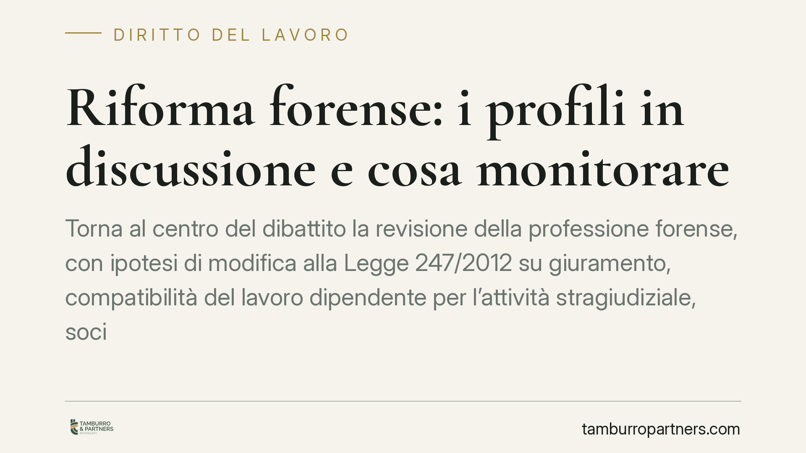

Riforma forense: i profili in discussione e cosa monitorare
Torna al centro del dibattito la revisione della professione forense, con ipotesi di modifica alla Legge 247/2012 su giuramento, compatibilità del lavoro dipendente per l'attività stragiudiziale, società tra avvocati e compensi. Il quadro è in evoluzione e non ancora consolidato: conviene distinguere ciò che è vigente da ciò che è solo proposto.

Il quadro in sintesi
Si discute da tempo di una revisione dell'ordinamento forense, cioè dell'insieme delle regole che disciplinano l'accesso e l'esercizio della professione di avvocato. Tra i temi ricorrenti nel dibattito figurano l'introduzione di un giuramento, una possibile apertura al lavoro dipendente per la sola attività stragiudiziale, interventi sulle società tra avvocati, sui compensi e sul tirocinio.
Avvertenza preliminare. Alla data di pubblicazione di questo contributo non risulta un provvedimento definitivo, pubblicato in Gazzetta Ufficiale, che recepisca in modo organico tali ipotesi. Si tratta quindi di profili in evoluzione, alcuni allo stadio di proposta o di dibattito politico-istituzionale. Per questa ragione trattiamo i singoli punti al condizionale e distinguiamo con nettezza il diritto vigente dalle modifiche solo prospettate.
Inquadramento normativo
Il testo di riferimento resta la Legge 31 dicembre 2012, n. 247 (nuova disciplina dell'ordinamento della professione forense). Alcune delle coordinate oggi vigenti aiutano a leggere le possibili novità.
L'art. 18 della L. 247/2012 disciplina le incompatibilità dell'esercizio della professione, tra cui, in linea generale, quella con il rapporto di lavoro subordinato. L'eventuale apertura all'avvocato dipendente per la sola attività stragiudiziale — ossia l'attività non svolta davanti al giudice: pareri, contratti, assistenza negoziale — inciderebbe proprio su questo impianto, introducendo una deroga circoscritta.
Le società tra avvocati (STA) trovano fondamento nell'art. 4-bis della L. 247/2012, inserito dall'art. 1, comma 141, della L. 4 agosto 2017, n. 124. Si tratta della disciplina che consente l'esercizio della professione in forma societaria, a determinate condizioni di partecipazione e controllo. Qualunque intervento di riforma dovrebbe coordinarsi con questa cornice.
I compensi professionali restano regolati, in assenza di accordo tra le parti e per la liquidazione giudiziale, dai parametri del D.M. 10 marzo 2014, n. 55 e successive modifiche.
Implicazioni pratiche
Il profilo più rilevante per i destinatari è la distinzione tra attività giudiziale e stragiudiziale. L'ipotesi di consentire all'avvocato con rapporto di lavoro subordinato lo svolgimento della sola attività stragiudiziale creerebbe una figura professionale nuova, con margini operativi limitati: resterebbe esclusa la rappresentanza in giudizio, mentre sarebbe ammessa l'assistenza nelle sedi negoziali e consulenziali. Un professionista interessato dovrebbe valutare con attenzione il perimetro dell'incarico e le relative coperture.
Sul versante societario, eventuali modifiche alla disciplina STA potrebbero riguardare assetti partecipativi, denominazione e responsabilità. Chi opera già in forma associata o societaria avrebbe interesse a verificare la compatibilità dei propri statuti con il nuovo quadro, una volta che questo sia effettivamente vigente.
Le novità in tema di giuramento, tirocinio e compensi avrebbero impatto soprattutto su chi si avvicina alla professione e sugli Ordini territoriali, chiamati a gestire adempimenti e modulistica.
Va infine ricordato un elemento tecnico decisivo: molti profili verrebbero definiti non dalla legge, ma dalla normativa secondaria (regolamenti attuativi e decreti ministeriali). Fino alla loro emanazione, diverse questioni operative resterebbero prive di disciplina di dettaglio.
Cosa fare in concreto
- Verificare lo stato dell'iter. Prima di assumere decisioni, accertare se il provvedimento sia stato pubblicato in Gazzetta Ufficiale e quale sia la sua effettiva vigenza.
- Leggere il testo definitivo, non le sintesi. Le ricostruzioni giornalistiche anticipano ipotesi che possono mutare nel corso dell'iter; fa fede il testo ufficiale.
- Individuare la decorrenza. Controllare eventuali norme transitorie e la data di entrata in vigore delle singole disposizioni, che spesso non coincide con la pubblicazione.
- Monitorare i regolamenti attuativi. Molti aspetti pratici dipenderanno dalla normativa secondaria: è opportuno seguirne l'emanazione.
- Verificare presso l'Ordine territoriale eventuali adempimenti e modalità operative, una volta che le nuove regole risultino vigenti.
Disclaimer
Contributo informativo a cura di Tamburro & Partners - Avv. Giuseppe Tamburro. Non costituisce parere legale.
Ogni storia di lavoro ha i suoi tempi.
Se gestisci HR e vuoi un confronto su contenzioso, ispezioni o licenziamenti, scrivi allo studio. Ti rispondiamo entro un giorno lavorativo.